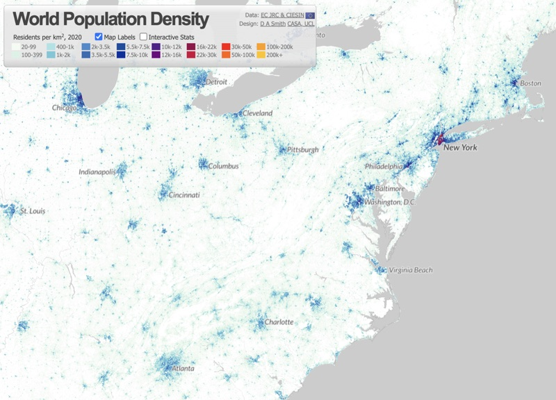
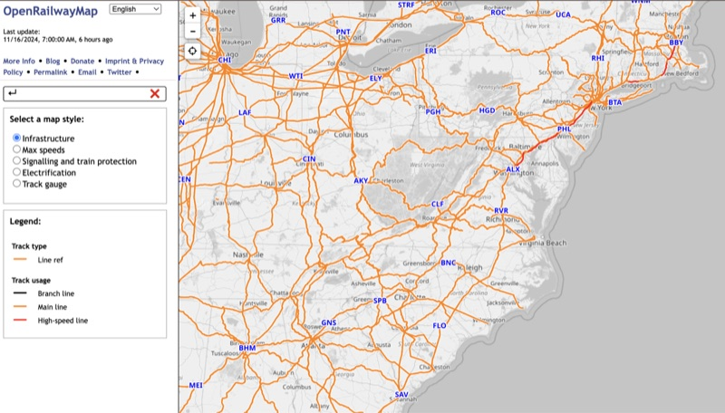
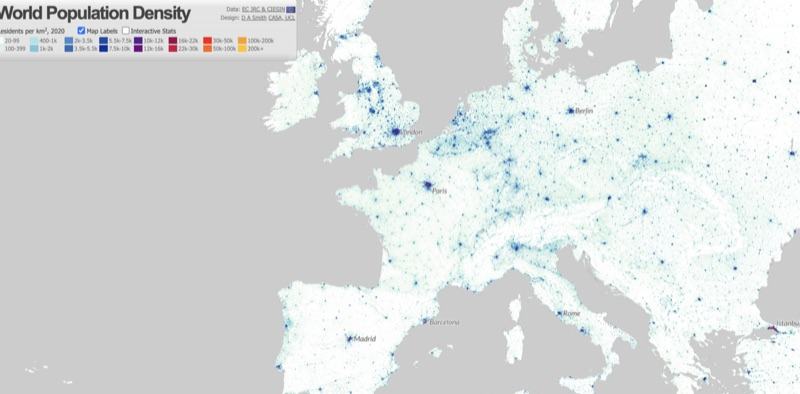
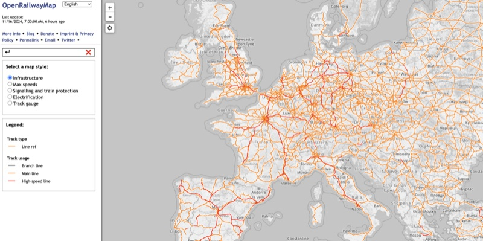

I was recently in Europe (Paris → Salzburg → Munich → Porto → Lisbon). Of course the food, the drinks, the sights and the people — especially the Portuguese, who absolutely rank among the top 5 friendliest people I've ever met — were all amazing. But as a recovering Transportation Modeler for a mid-size Southern US city, I couldn't help but be awed by the transit systems. The German system in particular was stereotypically efficient, but the Paris Metro was also a marvel.
There's been an immense quantity of literature and thinking on why the US transit system falls behind in comparison, both from purposeful funding decisions and a ridership perspective. But this misses something that maybe you only experience when you travel that must be a prerequisite to successful transit networks: density.
If you've read the Three Body Problem series (spoiler incoming) — at one point the entire Earth population shifts to Australia. With billions of people located in one continent, the population density resembled current-day Japan. This fact was rather shocking, but it told me more about Japan than about alien takeovers. Japan is ten times more dense than the US: 873 people per square mile versus the US's 87. England is 8x more dense than the US.
The Visual Comparison
A side-by-side look at the Eastern US seaboard — the most dense part of the US — versus Western-Central Europe tells the story pretty clearly. Using population density maps and Open Railway Map for transit lines:




Eastern US: scattered dense nodes (NYC, DC, Boston, Philadelphia) connected by... mostly nothing. The Northeast Corridor is the lone bright spot.
Western Europe: a dense, interlocking web of cities close enough to one another that rail is almost always the rational choice.
Is this scientific? No. Is it even properly scaled for comparison? No. That's not the point. The Eno Center of Transportation put it succinctly in 2019: "For fixed-guideway mass transportation, there's just no substitute for population density as a measure of the need for, and likely success of, the system."
Conclusion
I love dreaming of hypothetical transit networks across North America as much as the next ex-Transportation Modeler; but at some point the reality of the situation must be faced. The US is not dense enough to support the kind of transit networks seen in Europe. This is not to say the US shouldn't invest in transit — it absolutely should — but that the US should be realistic about what kind of networks it can support without, ahem, meaningful changes in how cities are planned to encourage sustainable densification.